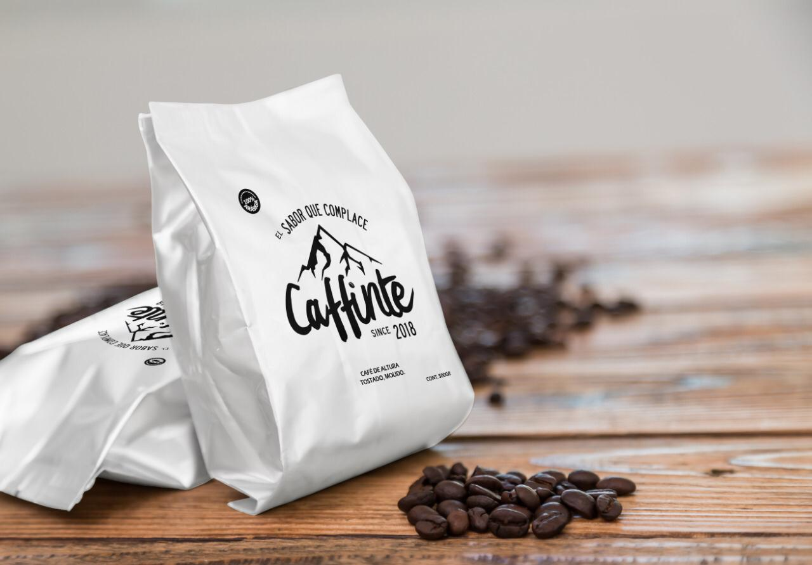

Descubre el sabor que complace...
El café es, después del agua, la bebida más consumida en el mundo. Aunque hay un cierto baile de cifras entre las diferentes fuentes, se calcula que diariamente se toman entre 1.600 millones a 2.000 millones largos de tazas al día. Que se dice pronto. Quizá es el motivo por el que el café y sus posibles efectos sobre la salud -tanto positivos como negativos-, son constantemente fruto de investigaciones y estudios.
A continuación te dejamos algunos datos curiosos del café:
- Es la segunda bebida más consumida en el mundo después el agua.
- Se estima que diariamente se beben entre 1,600 y 2 mil millones de tazas al día en el mundo.
- La saliva elimina la mitad del verdadero sabor del café.
- La palabra “café” viene del árabe “Qahhwat Al-bun”, que significa “vino del grano”.
- El café viene de árbol llamada cafeto de hasta seis metros de altura.
- El café puede mejorar el rendimiento físico.
- Está entre los productos más comercializados en el mundo junto con la Coca Cola.
- El café capuchino se llama así porque se asocia su color con el de los hábitos utilizados por los monjes capuchinos.
- Algunos estudios han demostrado que el consumo de cafeína puede aumentar tu metabolismo de 3% al 11%.
- Brasil es el mayor productor de café; el 30,16% de la producción mundial de café.
- Los mayores productores de café en México son Chiapas, Veracruz, Oaxaca, Puebla y Guerrero.
- Estados Unidos es el país que consume más café en el mundo.
- El 65% de los cafés se toman en el desayuno.
- Aunque el café suele ser una bebida que se toma en los desayunos, la mejor hora para consumir café es de 2 a 3 horas después de habernos despertado.

